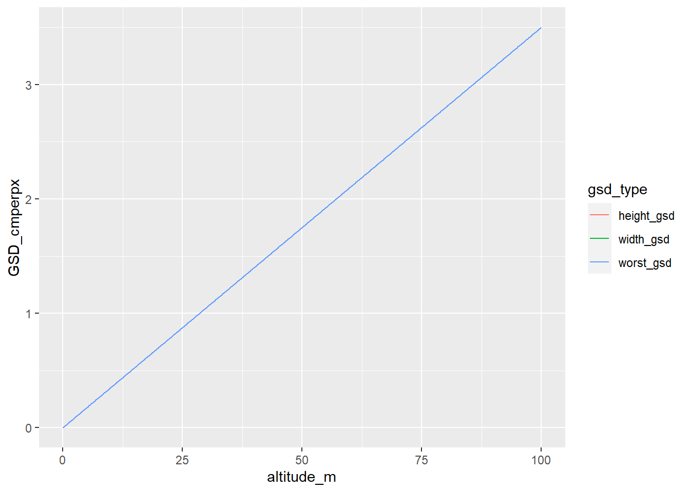
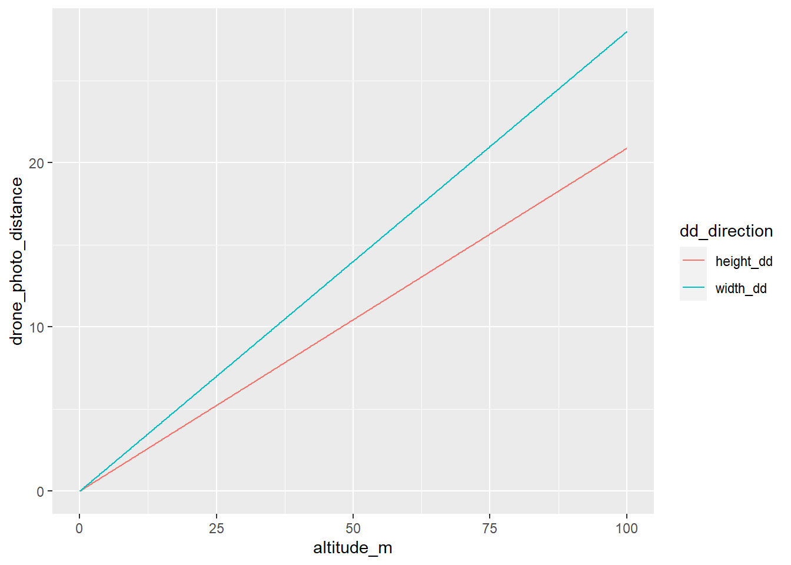
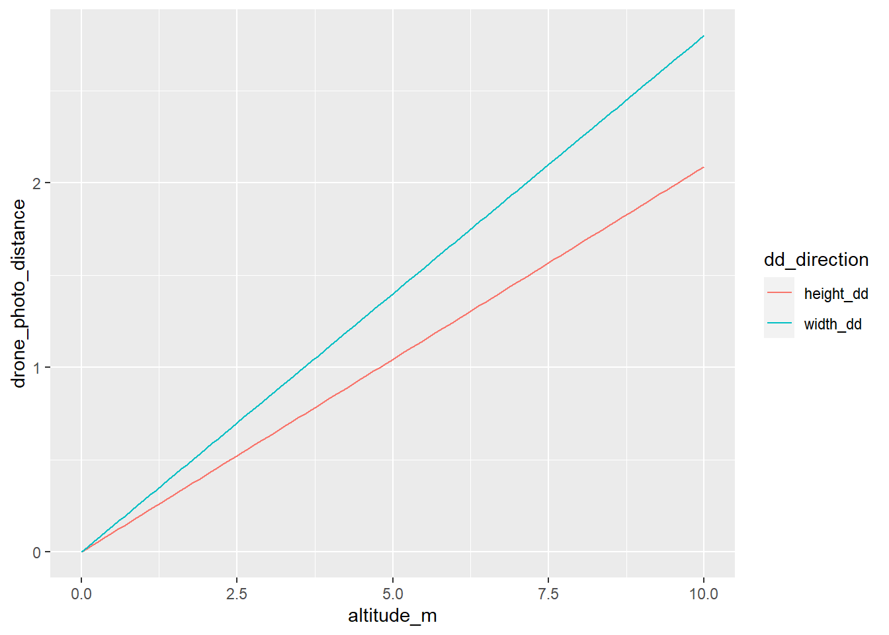
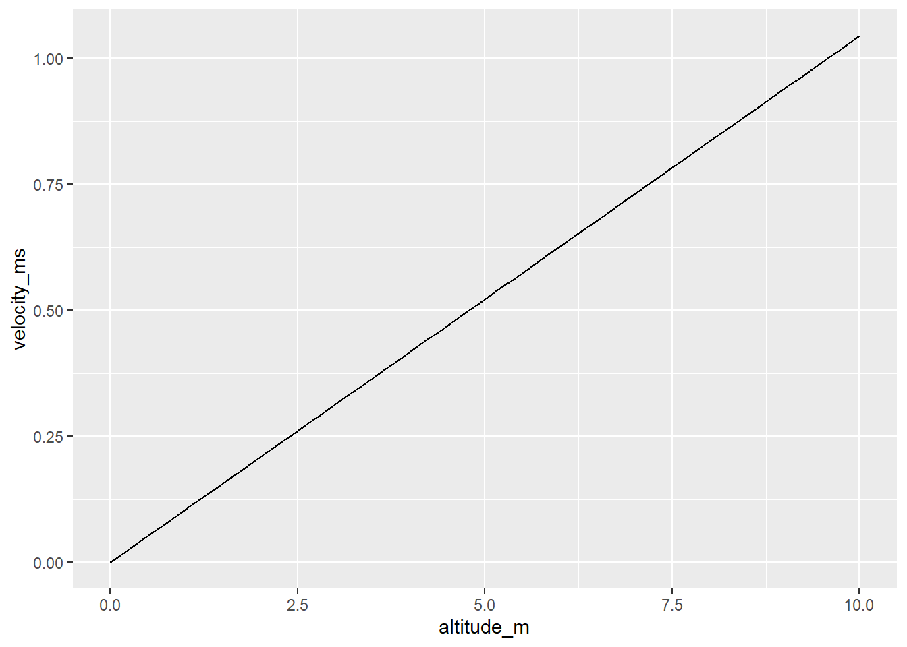
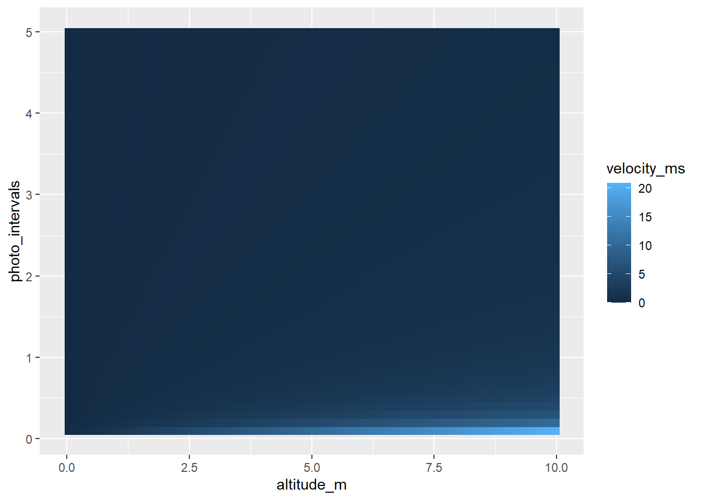
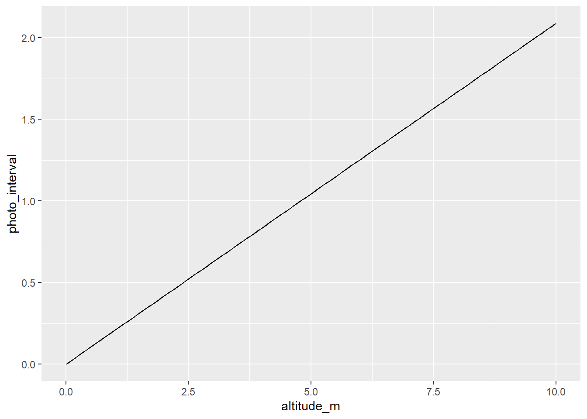

library(dplyr)
Attaching package: 'dplyr'The following objects are masked from 'package:stats':
filter, lagThe following objects are masked from 'package:base':
intersect, setdiff, setequal, unionlibrary(ggplot2)
Attaching package: 'dplyr'The following objects are masked from 'package:stats':
filter, lagThe following objects are masked from 'package:base':
intersect, setdiff, setequal, unionThere are a lot of variables that go into this. My goal here is to start by making a plot of how this varies with height. And then sort out how to calculate photo frequency given speed (or vice versa). Though Litchi allows photos by distance interval, which is nice.
Ground sampling distance. Lots of people determine heights to fly for a desired ground sampling distance (GSD) in cm/pixel. That’s useful to know, but we’re almost certainly always going to be flying low enough for really good GSD. Our main need here is that the overlap calculations rely on GSD. So, let’s find it. The equation is \[GSD_w=\frac{HS_w}{FI_w}\]
and
\[GSD_h=\frac{HS_h}{FI_h}\]
where the subscripts h and w are the dimensions height (along path) and width (across path), H is flight altitude in meters, S is sensor width or height (ie physical size of the sensor in mm), F is focal length (true, in mm. not 35mm equivalent), and I is image width or height in pixels (be careful here- often the default photo settings are 16:9 but the sensor dims are given for 4:3, and the 16:9 crops to get there. Easiest to change to shoot in 4:3, and get better coverage to boot. This gives GSD in m/px. We typically want it in cm/px, so we adjust H in the calculations below.
DJI sensor sizes are given here https://www.djzphoto.com/blog/2018/12/5/dji-drone-quick-specs-amp-comparison-page. For the drones we have, the Mini 2 is 6.3w x 4.7h (called 1/2.3” sensor), and the Phantom 4 Pro V2 is 13.2w x 8.8h (called 1” sensor).
Parameterise for Mini 2
Image sizes depend on photo settings, and are given for the Mini 2 and Phantom 4 Pro V2 by DJI. You can also get them from the photo’s EXIF data (either in Properties, or more completely from https://jimpl.com/. It’s a good idea to check, because the set aspect ratio can change. Mini can be 16:9 or 4:3 (best), and Phantom can be 16:9, 4:3, or 3:2 (best).
Mini 2
4:3: 4000×3000
16:9: 4000×2250
Phantom 4 Pro V2
3:2 Aspect Ratio: 5472×3648
4:3 Aspect Ratio: 4864×3648
16:9 Aspect Ratio: 5472×3078
Parameterise for Mini 2 at 4:3
I found the true focal length from the EXIF data, though it can be back-calculated from the 35mm format equivalent on the specs pages above.
The EXIF had Mini 2 at 4.5, Phantom at 8.8.
To back-calculate, the expression is \(Focal*Scale=35mmequiv\) where the scale factor is found in the EXIF, or is known and can be looked up for the sensor size. Both drones have a 24mm 35mm equivalent, but scale factors differ.
Parameterise for Mini 2
We now have what we need to get the two GSDs. Let’s get one as a function of height, and another to solve for height given GSD
And typically, the recommendation is to use the maximum of the height and width GSDs, as that’s the worst resolution.
What is that for the mini 2 for a range of heights? I’ll look at all of them, even if that’s not typically what we’d do.
Plot
mini_gsd |>
tidyr::pivot_longer(cols = ends_with('gsd'), names_to = 'gsd_type', values_to = 'GSD_cmperpx') |>
ggplot(aes(x = altitude_m, y = GSD_cmperpx, color = gsd_type)) + geom_line()
Not much difference there between h and w.
Does it match the Pix4d calculator?
That gives a GSD of 0.07 for a height of 2m, I get
What we really want is to get the flight distance we need to get a desired overlap. That will depend on height and GSD (from which we get the ground area covered per photo). And if we want photo timings, we need speed as well. Using the equations from pix4d, but rearranged so the order of operations makes sense to me.
The image size on the ground in meters (again using h and w for height (along path) and width (across path), given image height in px and GSD in cm/px is \[D_h=(I_hGSD)/100\]
Then the flight distance needed for an overlap % O_p expressed in 0-1 is \[d = D_h-O_pD_h = D_h(1-O_p)\]
The pix4d then goes on to back that back out to the definition of D_h, \[d=((I_hGSD)/100)(1-O_p)\]
If we can’t set a travel distance d for the drone, we will need to adjust it’s velocity v in m/s and the photo interval t in seconds. In practice, well want to adjust them in tandem (and for a given height). To get the photo interval for a given velocity, it’s simply the desired distance divided by velocity, \[t = d/v\]
and so the velocity for a given interval is
\[ v=d/t \]
We can obviously break this down into the equation for d, e.g. \[t = D_h(1-O_p)/v\].
First, the ground distance in m
Next, the distance the drone should travel, given overlap
The time interval, given velocity
The velocity, given interval (not typical, but we might want it since we can only set intervals down to 2 seconds when hand-flying.
Drone dist is just one level
Photo interval and velocity need to depend on that
Do this separately for h and w, I guess?
This might be all we need for litchi, and regardless, it will tell us about how close flightpaths need to be.
How does the drone distance depend on height and overlap?
For a fixed overlap of 80%, and the same heights sequences as above, for the h dimension (along flight path) and w (across),
Those are fairly different, actually

Could use plotly here to have mouseover. Or use observable or shiny.
What if we zoom in on the lower altitudes (< 10m)?
dd_hw |>
dplyr::filter(altitude_m <= 10) |>
ggplot(aes(x = altitude_m, y = drone_photo_distance, color = dd_direction)) + geom_line()
We could make a heatmap with overlaps, but I’m not sure we really care that much? We’d really only be interested in maybe 75, 80, 85 or something, and this is for rule of thumb. Do that later.
What are those at 2 and 4 m?
Here, let’s say we have a fixed overlap, and want to know the velocity we need to fly to get that at a given height and photo interval. This sounds contrived, but is pretty much exactly our situation when hand flying- the shortest interval we have is 2seconds, so how fast/slow do we need to fly to get 80% overlap at a range of heights?
Here, we’ll focus on the h dimension. While we could fly sideways, we usually will fly with forward velocity.
Let’s say 2 seconds, and then look at a heatmap.
And again zoom in
v_tib |>
dplyr::filter(altitude_m <= 10) |>
ggplot(aes(x = altitude_m, y = velocity_ms)) + geom_line()
So, to get 80% overlap if we’re limited to intervals of 2 seconds, we’d need to fly at about 0.2m/s at 2m or 0.4 at 4m. Should do a tooltip kinda thing. But for now
# A tibble: 2 × 2
altitude_m velocity_ms
<dbl> <dbl>
1 2 0.209
2 4 0.418How about a heatmap of heights and intervals?
That’s a dumb scale. Obviously we can fly super fast at 100m and super fast photo intervals
vel_map |>
dplyr::filter(altitude_m <= 10) |>
ggplot(aes(x = altitude_m, y = photo_intervals, fill = velocity_ms)) + geom_raster()
Still not particularly useful. Moving on.
How often do we need to take photos given a velocity and height? Let’s start by saying velocity of 1m/s (3.6km/h).
t_tib |>
dplyr::filter(altitude_m <= 10) |>
ggplot(aes(x = altitude_m, y = photo_interval)) + geom_line()
So, at that velocity, the photo interval can’t be as long as 2 seconds without flying at 10m. Clearly that would change as we fly slower.
Make a heatmap again, I guess, even if it wasn’t very useful before and we know this is just flipping axes and colors.
The obvious thing to do here is to make an observable quarto where we can select drone type, desired overlap, things we want to set, and it makes the plot and returns values we want. For now though, these plots get us most of the way there.
What do those distances look like for the phantom?